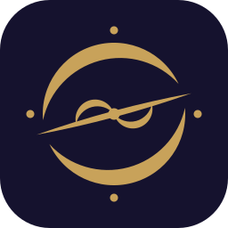
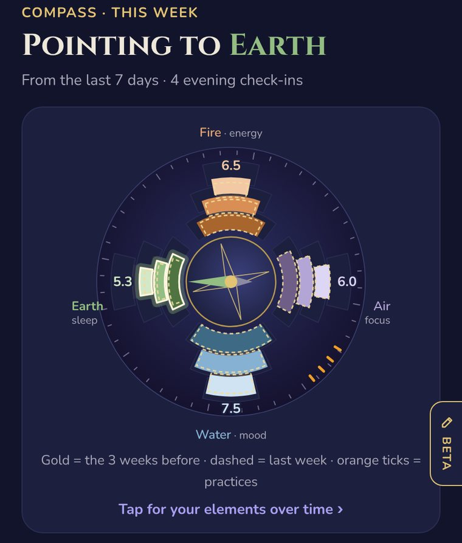
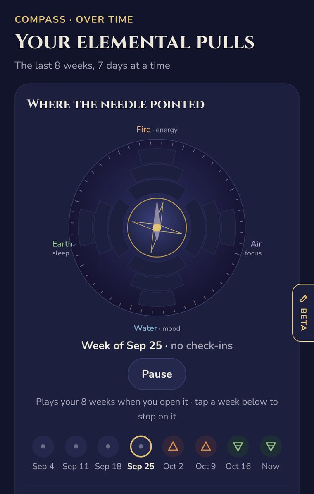
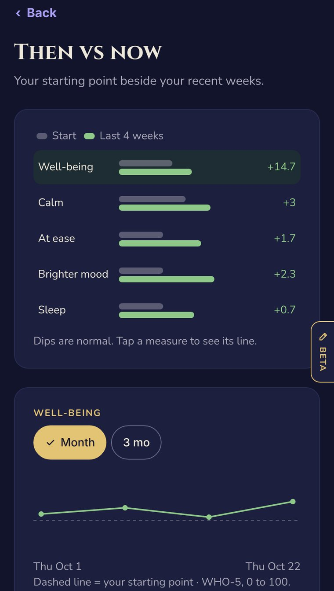
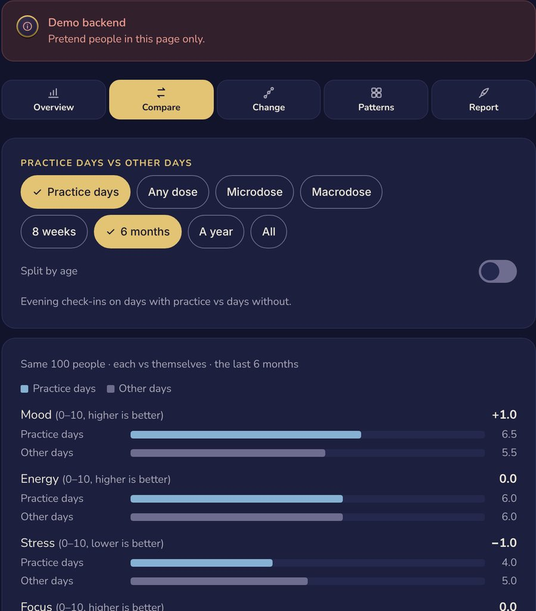
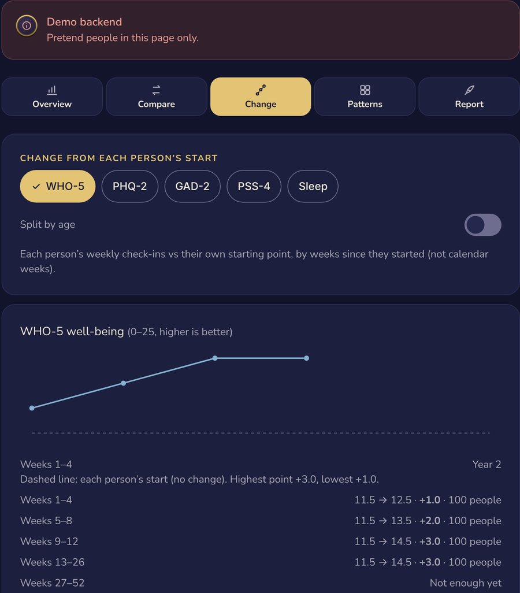

The session
The dose, the day, the immediate response.

EQUILIBRIUMBalance in motionReal-world evidence for psychedelic wellness
Programs track a session. Equilibrium follows the months after it, to see which mix of daily practice, integration and plant medicine goes with real change, person by person.
01 · The evidence gap
The dose, the day, the immediate response.
Practice, integration, people who don't respond, and people who never dose.
02 · The combination lock
An idea from New Mexico's psychedelic community. Averages hide the useful pattern: the same mix can work for one person and not another, until a second dial turns.
Ana's lock is open. Which dials hold it?
Find the dial that opens Ben's lock
Find Cara's missing dial
Illustration, not study results. Every dial turns. Different dials, three different locks.
Compare a member's weeks with one mix against weeks with another.
Practitioners name 3–5 likely mixes before the data comes in.
No change by week 12? See which dial they add before change shows.
In the app now: practice days and dose days, each person against their own start. Next: all eight practice dials on the evening check-in, filled in automatically from what members do in the app.
03 · Two views of the same change
Every evening check-in feeds two views: a private one for the member, and a de-identified one for states and research partners.
Real app screens with test data, plus charts with pretend data. No real member data is shown.
Private to her. Synced across her devices.

Reads her evening check-ins. No extra questions.
Points to the element that needs her most, says why, and offers a practice to match.
Gold rings show the 3 weeks before, so change over time stays visible.
Pretend member, 6 months. Weekly score, 0–100. Dashed line: her starting point. Dips are normal.


Real screens from the working alpha, with a test member and five weeks of test history.
For approved partners. Groups of 10+ only.
Evening reading, 0–100, averaged each week.
Evening readings, 0–100, vs the same people's other days.
Average per person in each kind of week. Practice week = 3+ practice days.
The sample file holds the pretend aggregates shown here, never rows or people.


Real screens from the working alpha, on its demo backend with 100 pretend people.
Built into the alpha: Overview, Compare, Change, Patterns and Report tabs, answered inside the database. Tap the tabs above to see each one at a few thousand people.
04 · Why now
States are opening access faster than they're building ways to measure it. Equilibrium brings long-term, de-identified data to that gap, at no cost to the state.
For HHS to partner with states, share data and expand real-world evidence on psychedelics.
Its public hearing named data collection and standardization as a topic.
05 · Working alpha · Release 4.5.1
A few timed minutes off screen: breath, stillness, a walk, a lesson
Mood, energy, stress, focus, sleep, pressure, resource · 30 seconds
Validated measures: WHO-5, PHQ-2, GAD-2, side effects
Each person against their own start, from day 14
Patterns, not proof. No member data is studied before an independent ethics review.
06 · The next stage
Equilibrium works today. The next step takes it from a small alpha to a platform ready for its first state pilot.
We're talking with a small circle of people who want to help build what the field is missing:
The field has its medicines.